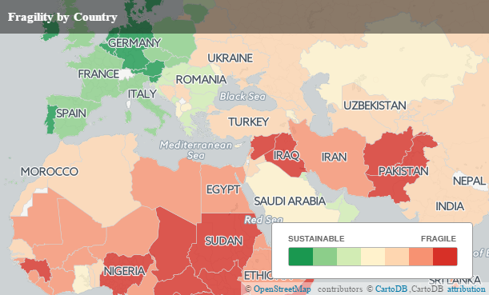
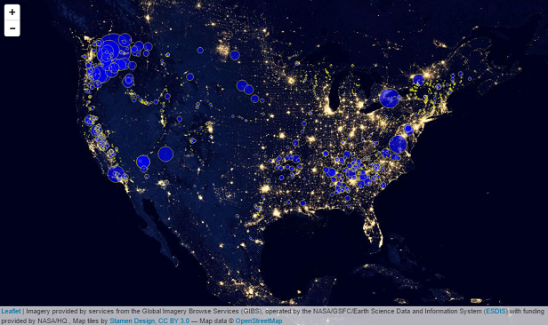
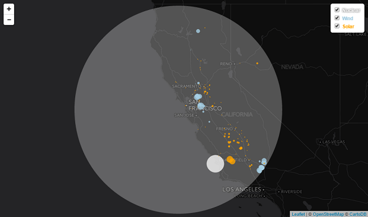

N. Lewis' Portfolio
Created for course MAP672 of New Maps Plus

Uninsured Adults in the US by County
This is a choropleth map showing percentage uninsured adult population in the United States of America. The world's only current superpower, this curious country paradoxically fails to provide certain basic services to its citizens such as universal healthcare; services considered a right in much of the developed world.
This map was generated in QGIS and CartoDB to understand how the platforms integrate.

The map was build using CartoDB to illustrate the fragile states index published by the Fund for Peace.

This map shows hydro power plants across the USA. There is a concentration in large capacity plants serving the Northwest, with a plethora of smaller plants serving the energy consuming East.
This map was built with custom JavaScript code drawing upon the Leaflet JavaScript Library. I've also placed citylights as the baselayer, to give a sense of power consumption.

This map shows power facilities, color coded by type, within 500km of the click.
This map was built with custom JavaScript code drawing upon the Leaflet JavaScript Library.